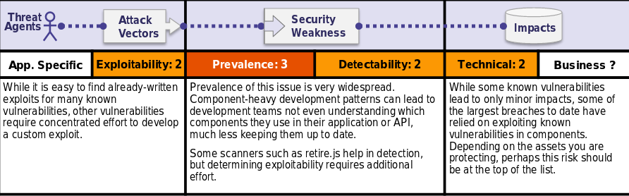

Is the Application Vulnerable?
You are likely vulnerable:
•If you do not know the versions of all components you use (both client-side and server-side). This includes components you directly use as well as nested dependencies.
•If software is vulnerable, unsupported, or out of date. This includes the OS, web/application server, database management system (DBMS), applications, APIs and all components, runtime environments, and libraries.
•If you do not scan for vulnerabilities regularly and subscribe to security bulletins related to the components you use.
•If you do not fix or upgrade the underlying platform, frameworks, and dependencies in a risk-based, timely fashion. This commonly happens in environments when patching is a monthly or quarterly task under change control, which leaves organizations open to many days or months of unnecessary exposure to fixed vulnerabilities.
•If software developers do not test the compatibility of updated, upgraded, or patched libraries.
•If you do not secure the components' configurations (seeA6:2017-Security Misconfiguration).
How to Prevent
There should be a patch management process in place to:
•Remove unused dependencies, unnecessary features, components, files, and documentation.
•Continuously inventory the versions of both client-side and server-side components (e.g. frameworks, libraries) and their dependencies using tools likeversions,DependencyCheck,retire.js, etc. Continuously monitor sources likeCVEandNVDfor vulnerabilities in the components. Use software composition analysis tools to automate the process. Subscribe to email alerts for security vulnerabilities related to components you use.
•Only obtain components from official sources over secure links. Prefer signed packages to reduce the chance of including a modified, malicious component.
•Monitor for libraries and components that are unmaintained or do not create security patches for older versions. If patching is not possible, consider deploying a virtual patchto monitor, detect, or protect against the discovered issue.
Every organization must ensure that there is an ongoing plan for monitoring, triaging, and applying updates or configuration changes for the lifetime of the application or portfolio.
Example Attack Scenarios
Scenario #1: Components typically run with the same privileges as the application itself, so flaws in any component can result in serious impact. Such flaws can be accidental (e.g. coding error) or intentional (e.g. backdoor in component). Some example exploitable component vulnerabilities discovered are:
•CVE-2017-5638, a Struts 2 remote code execution vulnerability that enables execution of arbitrary code on the server, has been blamed for significant breaches.
•Whileinternet of things (IoT)are frequently difficult or impossible to patch, the importance of patching them can be great (e.g. biomedical devices).
There are automated tools to help attackers find unpatched or misconfigured systems. For example, the ShodanIoT search engine can help youfind devicesthat still suffer from theHeartbleed vulnerabilitythat was patched in April 2014.